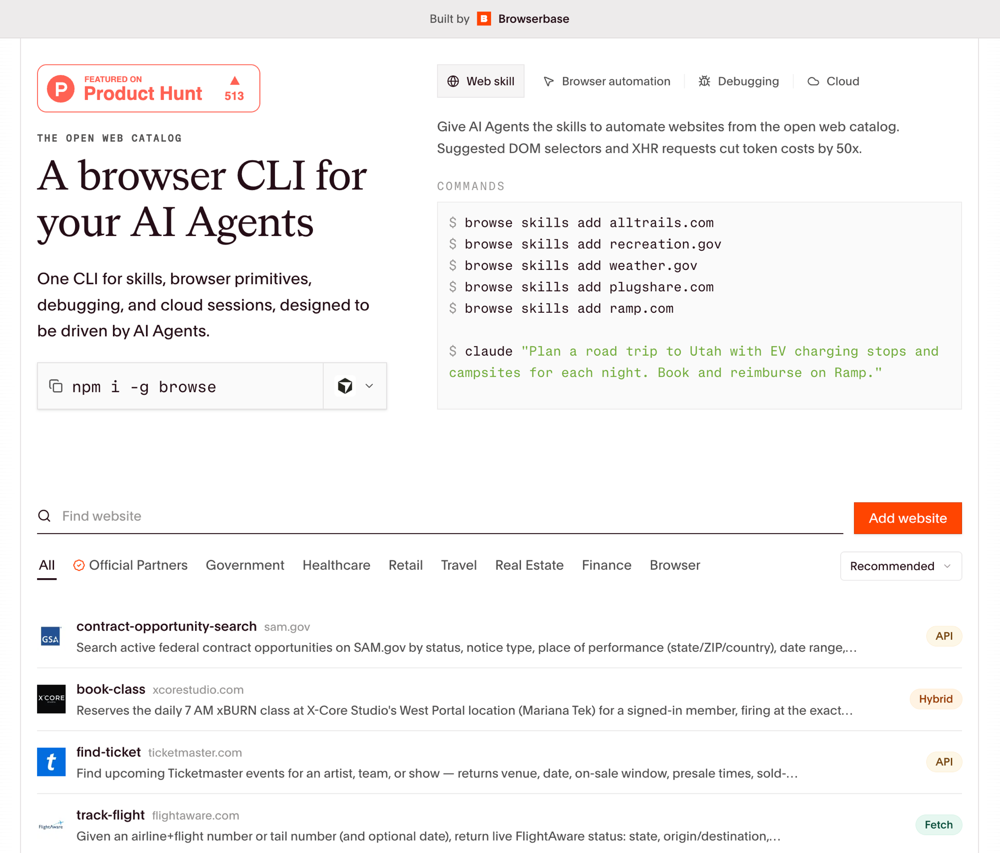

AI Engineer World's Fair
Hill Climbing Skills
How to improve agents without touching the model.
Shubhankar Srivastava · BrowserbaseSlido · slido.com #1609070
whoami
Shubhankar Srivastava
Sales Engineer · Browserbase
I help our customers ship browser agents in production.
Questions? Scan along the way.
slido.com · #1609070
before we dive in
A 60-second primer on browser agents.
Browser agent
An agent that can drive a browser.
Browserbase
A platform for building and running browser agents.
browse CLI
The commands the agent calls to act: open · snapshot · click · type.
the biggest problem
Browser agents are
not reliable.
But reliability is an engineering problem.
case in point
A browser agent on Google Flights.
▶ session replay: drop a clip at assets/flights-fail.mp4
can't drag the departure-time slider · 29 turns · no answer
a different failure
A browser agent on OpenTable.
▶ session replay: drop a clip at assets/fail-opentable-akamai.mp4
searches for a table, hits Akamai bot protection · 30 turns · $6.22 · no answer
the root cause
Browser agents are geniuses
that never learn.
unreliable
General-purpose models, site-specific tricks
They know no single site's quirks. Yesterday's working flow quietly breaks today.
slow
Every run starts from zero
It re-figures everything out every run. A trick it just found is gone by the next.
expensive
Fine-tuning isn't the fix
Retraining per-site is costly and brittle. The web changes faster than you can train.
the idea
Loops that learn.
Borrowing from Karpathy's autoresearch loop, applied to browser agents.
▶ Live demo
Kick off an autobrowse loop.
The same Google Flights task that just failed.
how it works
One prompt in. A skill out.
// runner.mjs: the trainer loop
let strategy = "# skill"
for (i = 1; i <= N && !passed; i++) {
s = browserbase.create() // fresh
run = await runDoer(s, model) // spawn evaluate.mjs
rev = await trainer(run.trace, strategy)
// study → fix → append → judge
strategy = rev.strategy_md // grows the doc
passed = rev.pass
}
graduate(strategy) → SKILL.md
let strategy = "# skill"
for (i = 1; i <= N && !passed; i++) {
s = browserbase.create() // fresh
run = await runDoer(s, model) // spawn evaluate.mjs
rev = await trainer(run.trace, strategy)
// study → fix → append → judge
strategy = rev.strategy_md // grows the doc
passed = rev.pass
}
graduate(strategy) → SKILL.md
A fresh doer each run. The teacher appends one fix to
strategy.md. It graduates when a run passes.the artifact
The output is a production playbook.
A real
SKILL.md the loop wrote: the steps that work, and the gotchas it discovered.SKILL.md.claude/skills/google-flights-search-with-filters/
--- name: google-flights-search-with-filters description: Search Google Flights for a route, date, cabin class, baggage, and departure-time filters. --- # Google Flights Search with Filters ## Workflow ### Step 1: Navigate via the pre-filled URL ALWAYS use the ?q= URL. NEVER open the bare homepage. https://www.google.com/travel/flights?q=business+class +flights+from+SFO+to+JFK+on+July+15+departing+after+10am ## Heuristics learned 1. Pre-filled URL is mandatory. The bare homepage wastes 3–5 turns. 2. Calendar reopen bug is real. Escape → Tab ×3 → click Search. 3. Use JS injection for sliders. Mouse drag is unreliable; set value = 20 (30-min steps; 20 = 10:00 AM). 4. Never re-fill a filled field, it resets the form.
the results
The same agent, improving itself.
The hill climb, across cost, turns, time, and success.
Google Flights
find flights
Cost
16× cheaper
Turns
6× fewer
Time
3.8× faster
Success
fails, then passes
OpenTable
book a table
Cost
12× cheaper
Turns
7.5× fewer
Time
7× faster
Success
fails, then passes
rec.us
find courts
Cost
2.7× cheaper
Turns
1.8× fewer
Time
1.4× faster
Success
stays passing
the product
browse.sh: muscle memory for the web.
400+ ready-made skills
Import any site into your agent.
Submit a prompt
Get a skill built for your site.
Suggested selectors
Cut token costs ~50×.

beyond browsers
It's not just browsers.
Any agent working a live system re-learns from zero. The same train-a-skill loop applies far beyond the browser.
Coding agents
Re-learns your repo's conventions on every task.
conventions, relearned
Research agents
Re-discovers which sources actually work, every run.
sources, rediscovered
Internal ops
Same dashboards, same flows, no memory.
flows, repeated
your turn
Do this in your domain.
It works wherever two things are true.
01
A replayable environment
You can retry the same task deterministically.
02
A verifiable outcome
You can tell pass from fail automatically.
Then a doer/teacher loop does the rest. Cheap, and it compounds.
Questions?
the code I demoed
github.com/shubh24/ai-engineer-autobrowse
use the skill
npx skills add github.com/browserbase/skills --skill autobrowse
Shubhankar Srivastava · Browserbase
appendix · the doer's brief
The skill is just injected into the prompt.
A fixed harness: the
browse CLI and a few hard rules, plus everything the teacher has learned so far.system promptdoer · rebuilt every iteration
You are a browser automation agent. You navigate websites using the browse CLI via the execute tool. ## Commands browse open / snapshot / click [X-Y] / fill / press browse mouse drag <x1 y1 x2 y2> # sliders ## Critical Rules 1. ALWAYS snapshot after every action. Refs invalidate when the DOM changes. 2. Never invent refs. Snapshot first, then click. 3. Use fill, not type, for input fields. # Current Navigation Strategy Learned from previous iterations. Follow these: {{ strategy.md, injected fresh each iteration }}